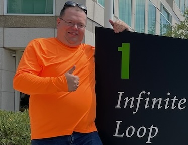

Digital Curriculum Vitae

Welcome to my digital CV, my name is Claude Houle, I am a Montreal-based software developer with 20+ years of experience.
I started in enterprise Java back end (Mediagrif, Compuware/Morgan Stanley, Accovia) building distributed systems and core platforms, and eventually transitioned to iOS in 2010, then served as mobile architect and lead at Spiria and Appcom, creating shared frameworks, establishing CI/CD, and mentoring high-performing teams.
Currently Lead iOS at Poka, elevating quality and productivity, pioneering visionOS development, and championing testing, tooling, and continuous learning.
1Goals
I consider myself a technology enthusiast, and my goal is to develop software solutions that enhance the lives of end users through meticulously designed applications. I believe that mobile phones and tablets, particularly Apple’s devices, serve as the ideal platforms for delivering such software.
I am committed to continuously refining my skills by exploring new patterns, paradigms, and technologies. My goal is to consistently enhance my capabilities as a developer, striving to improve upon my performance from the previous week or month.
I believe in engaging early with product discovery and design to translate user needs and business goals into clear, testable requirements. I enjoy partnering with product managers and designers to shape scope, validate assumptions with data and prototypes, and propose pragmatic, high‑impact solutions that balance technical feasibility, UX quality, and time‑to‑value. This product‑minded approach aligns engineering work with measurable outcomes and reduces risk through iterative delivery.
Additionally, I have been fortunate to receive mentorship from exceptional software developers early in my career. In the past 5 to 7 years, I have taken on the role of mentor myself, guiding the next generation of software engineers to enhance their skills and professionalism.
2Technologies
Here’s a curated overview of the technologies I use to ship production software. It highlights deep expertise across Apple platforms (iOS, visionOS, macOS) with Swift/Objective‑C, grounded by prior Java/Kotlin experience and supporting infrastructure.
2.1Programming Languages
2.1.1Secondary Languages
Other languages & technologies that I have worked with over the years:
- C/C++
- Python
- JavaScript / TypeScript
- SQL
- C# / .NET Core
2.2Operating Systems
2.3Libraries & Frameworks
A non-exhaustive list of frameworks I’m proficient with and that remain relevant.
2.3.1Apple Ecosystem
2.3.2Java Ecosystem
- Spring Framework
- Spring Boot
- Hibernate
- Apache Tomcat
- Apache Lucene
- Apache Solr
- JBoss
- Liquibase
- Log4j
- Apache Maven
- Apache Ant
- Apache ActiveMQ
- J2EE
- JUnit
- Mockito
2.3.3Android Ecosystem
2.3.4RDBMS
2.4Testing
I’m a firm believer that unit tests are an integral part of a healthy codebase.
2.4.1Snapshot Tests vs. Xcode Previews
Xcode Previews provide immediate, design-time feedback, allowing developers to see changes in real time and minimize the feedback loop. Snapshot tests operate on a longer cycle but are essential for catching visual regressions as the product evolves. I leverage both by using a lightweight approach to convert SwiftUI previews into snapshot tests with minimal code, combining rapid iterations with robust regression protection.
2.4.2XCUITest
Valuable for validating end-to-end behavior before App Store releases, but inherently more fragile than unit tests. With careful isolation and robust selectors, they help reduce production defects.
2.4.3Code Coverage
Coverage is a useful signal—not a goal in itself. Pursuing 100% often has diminishing returns. In my experience, ~75% coverage correlates with strong stability and infrequent severe defects reaching users.
2.5Patterns & Principles
- MVVM
- MVC
- KISS
- SRP
- Law of Demeter
2.6Tools
- Git
- Apple Xcode
- Apple Instruments
- Swift Package Manager
- CocoaPods
- IntelliJ IDEA (and Android Studio)
- Docker
2.7AI
I’m excited by AI’s potential to transform software engineering. Developers won’t disappear—we’ll be even more essential to steer AI toward robust, ethical, and maintainable solutions. The discipline is changing rapidly, enabling greater productivity and new kinds of creativity that weren’t feasible before.
2.7.1AlexCode for Xcode
AlexCode is a companion for Xcode that brings agentic, cursor-like workflows into the IDE. It’s been especially helpful for:
- Translating legacy Objective-C to modern Swift.
- Migrating XIBs/Storyboards to programmatic Auto Layout or SwiftUI.
- Maintaining comprehensive DocC documentation across modules.
- Generating unit tests for previously untested code paths.
- Refactoring tightly coupled code into smaller, testable components.
These tasks were historically costly to justify; with AI assistance, they can often be completed in a day.
2.7.2Claude Code
Claude Code is my current choice for agentic workflows, with flexible custom commands, MCPs, and sub-agents that enable flows not easily replicated in other IDE integrations. It excels at structured, multi-step problem solving with strong reasoning and code-editing capabilities.
3Experience
A brief summary of every position I had in my career (from current to the oldest)
3.1Poka.io
Poka.io is a web and mobile platform designed for frontline manufacturing teams. It enables workers to capture, consume, and share critical information in real time on the production floor, building a standardized multimedia knowledge base of procedures, training content, and solutions for workstations and machines.
- Title: Lead iOS Developer, Lead visionOS Developer, Mobile Architect
- Dates: September 2021 – Present
3.1.1Key Achievements
3.1.1.1Team Productivity
Transformed the existing iOS team (8 developers including myself) into a high-performing unit by building internal tools and reusable libraries that reduced development time, improved code quality, and enabled engineers to focus on feature delivery. These initiatives standardized best practices, accelerated onboarding, and significantly increased throughput.
3.1.1.2visionOS Application
Initially tasked with porting the existing iOS app to visionOS for an Apple Partner Relations review to obtain a Vision Pro Developer Kit. While the port functioned (with notable SDK limitations), it did not meet the desired product experience. In parallel, independently designed and built a new visionOS-native application to push the boundaries of the SDK. This new application received strong feedback from Apple, standing out among teams that had only performed minimal ports, resulting in Poka being awarded a Vision Pro Dev Kit. The app launched on day one of the visionOS App Store.
3.1.1.3Sri Lankan Team Onboarding
Led the hiring, onboarding, and integration of a Sri Lankan iOS team (3 new developers):
- Designed a rigorous onboarding and training program with real-world examples and hands-on exercises.
- Supervised the onboarding process through code reviews, technical guidance, and Q&A.
- Provided targeted coaching to the local lead to align practices and standards.
The team is now a productive, ongoing contributor to the iOS codebase and broader engineering initiatives.
3.1.2Responsibilities
Led the iOS team across multiple applications and initiatives throughout the SDLC:
- Conducted R&D on iOS and visionOS capabilities, architectures, and patterns.
- Established clear collaboration workflows and tools with Product Management and UX Design.
- Provided 1:1 mentorship, code reviews, and career-development guidance.
- Organized recurring lunch-and-learn sessions to foster continuous learning and knowledge sharing.
- Built internal developer tools and templates to boost productivity and consistency.
- Managed CI/CD pipelines and release automation.
- Oversaw automated App Store deployments and release processes.
3.1.3Technologies & Frameworks
3.2Appcom
Appcom is a development studio based in Longueuil, Québec, specializing in mobile and web applications. Founded over a decade ago, the company is a key player in the regional digital ecosystem, connecting businesses with their users through innovation and design.
- Title: Lead iOS Developer
- Dates: September 2019 – September 2021
3.2.1Key Achievements
3.2.2Responsibilities
Led the iOS team across multiple client engagements, spanning planning, development, code review, documentation, and release management throughout the SDLC:
- Conducted R&D on emerging iOS capabilities and architectural patterns.
- Established team processes and collaboration tools to improve communication with product management and UX design.
- Provided 1:1 mentorship, code reviews, and feedback to support growth and performance.
- Organized recurring lunch-and-learn sessions to promote knowledge sharing and continuous learning.
- Built internal developer tools and templates to increase productivity and consistency.
- Managed CI/CD pipelines hosted on MacStadium.
- Owned automated App Store deployments and release processes.
3.2.3Technologies & Frameworks
- Apple:
- Third-party:
- CI/CD and tooling:
3.2.4Projects
As a mobile development studio, I contributed to numerous client projects, including:
- Metro & Moi (Food Retail Industry)
- Super C (Food Retail Industry)
- Food Basics (Food Retail Industry)
- AbbVie Maviret (Pharmaceutical Industry)
- WKND / BLVD Radio (Live Entertainment Industry)
- Le Devoir (News Industry)
- Biodome de Montréal (Tourism Industry)
- Christies Luxury Art (Auction Industry)
- BeautéStar (Retail Industry)
- MPN Genie (Healthcare Industry)
- Amigo Express (Sustainable Mobility Industry)
- TaxiCoop (Mobility Industry)
- Technic (Academic)
- iQuad (Tourism Industry)
3.3Spiria Digital
Spiria Digital is a Canadian custom software development agency specializing in tailored digital solutions across industries. Founded in 2003, Spiria delivers high-quality software products and services, including mobile and web applications, application modernization, and digital transformation initiatives.
- Title: Software Architect; Senior iOS Developer
- Dates: October 2013 – September 2019
3.3.1Responsibilities
- Led solution architecture for multiple client engagements: requirements analysis, technical discovery, and definition of system architecture, API contracts, data models, and integration strategies.
- Produced architecture artifacts and documentation to guide delivery teams, including security considerations, scalability approaches, and deployment topologies.
- Acted as a hands-on architect when needed, contributing to implementation, code reviews, and technical troubleshooting.
- Defined engineering standards and best practices; mentored developers and collaborated closely with product and UX to align technical solutions with business goals.
- Supported performance tuning, reliability improvements, and DevOps practices to improve delivery speed and quality.
3.3.2Technologies & Frameworks
Specialized in the Apple ecosystem, including:
3.3.3Projects
Representative projects include:
- CAE PreStudy Pilot Training Application — Architecture and development across back end, front end, and iOS application.
- Acosta SLTouch — Hybrid mobile application & frameworks targeted for Retail Analytics.
- Skillable App — Progressive Web App for a micro-learning platform.
- Payfare (DiDi / Lyft) — iOS and Android contributions for the early payment platform for DiDi & Lyft drivers.
- BookJane — iOS application development for healthcare workforce management application.
3.48D Technologies
8D Technologies Inc., founded in 1996 and based in Montréal, Québec, is a provider of intelligent transportation systems, specializing in bicycle-sharing and automated parking solutions that enhance urban mobility and user experience.
- Title: Back-End Java Developer (2009); iOS Developer (2010–2013)
- Dates: October 2009 – October 2013
3.4.1Responsibilities
- Began as a back-end Java developer on the Solstice bike-sharing application suite.
- Transitioned to the iOS team when a position opened, driven by a desire to learn new technologies, adopt modern development paradigms, and contribute to the emerging mobile ecosystem.
- As an iOS developer, I maintained the Spotcycle application (a generic bike-sharing app) and developed the Solstice iOS application, a white-label product within the Solstice suite.
3.4.2Technologies & Frameworks
3.5Accovia
Accovia was a Montréal-based company specializing in information technology solutions for the travel and tourism industry. Founded in 1985, it became a leader in travel packaging technology, providing software that enabled efficient management of travel packages across supply, design, and distribution.
- Title: Back-End Java Developer
- Dates: September 2007 – September 2009
3.5.1Responsibilities
- Assigned to the Architecture Team to contribute to the core platform that became the Lexo Dynamic Packaging software (internally known as the Ibiza Project).
- Designed and implemented back-end services and integration components using Java, Spring, and Hibernate.
- Collaborated on performance optimization, reliability improvements, and service orchestration within a distributed system.
- Supported build automation and continuous integration practices to improve delivery speed and quality.
3.5.2Key Challenges
The Ibiza Project emerged from a critical situation in which a major client, having commissioned a modernized version of Accovia’s flagship Logitours product, initiated legal action due to performance and reliability issues in the delivered software. Under new leadership, Accovia resolved the dispute and committed to delivering a replacement platform that was fast, reliable, and did not require additional investment from the client.
The mandate was ambitious: rebuild the platform on a modern technology stack under tight time, budget, and staffing constraints. Through disciplined architecture, focused scope, and rigorous engineering practices, the team delivered the project on time and on budget. I consider myself fortunate to have been part of that team.
3.5.3Technologies
3.6Compuware Montréal
Compuware Montréal was a consultancy division of Compuware Canada serving large-scale software development needs in the banking sector, most notably Morgan Stanley.
- Title: Java Consultant
- Dates: September 2005 – September 2007
3.6.1Responsibilities
- Assigned to the Morgan Stanley account, contributing to the Libra project.
- Migrated business logic from COBOL on z/OS to Java services running on Linux with IBM Db2.
- Implemented and optimized integration patterns for high-throughput, reliable processing.
- Collaborated with cross-functional teams to ensure adherence to enterprise security and compliance standards.
3.6.2Key Challenges
As a financial institution, Morgan Stanley enforced stringent security, reliability, and compliance requirements. All technology selections required approval from the Enterprise Architecture group based in New York. The project was executed by a globally distributed team—New York, Budapest, Tokyo, and Vancouver—demanding careful coordination across time zones and cultures, particularly notable given the tooling and practices of the mid-2000s.
3.6.3Technologies
3.6.4Projects
During my tenure at Compuware Montréal, I was dedicated to a single global banking client and contributed to multiple applications within the Libra project—an enterprise initiative to migrate critical functionality from IBM z/OS mainframes to Linux-based services.
The work was high-stakes: most components were mission-critical and could not tolerate performance regressions or functional deviations. Success required thorough analysis, careful planning, and disciplined engineering practices executed on a weekly cadence.
3.7Mediagrif
Mediagrif Interactive Technologies is a Canadian company specializing in E-Commerce solutions that optimize and accelerate commercial interactions between buyers and sellers. The company operates multiple platforms that support e-commerce, strategic sourcing, and related business processes.
- Title: Java Developer
- Dates: March 2003 – September 2005
3.7.1Responsibilities
- As a member of the Software Infrastructure team, contributing to the core services, libraries, and tooling used by multiple e-commerce product teams.
- Developed reusable components and data access layers to streamline delivery and improve code quality across projects.
- Supported platform stability, deployment processes, and development standards adopted by various application teams.
3.7.2Key Challenges
This was my first full-time professional role, where I focused on building strong engineering fundamentals—adopting professional practices, learning mentorship, and developing production-grade software in a collaborative environment.
3.7.3Technologies
- Java
- Hibernate
- Apache Tomcat
- JBoss
- SQL
- Oracle 8/9
- Apache Ant
- Proprietary internal frameworks and tools
4Education
From September 2000 to May 2003, I completed the Computer Science Technology program at Cégep Édouard-Montpetit in Longueuil, Québec, Canada. The curriculum emphasized practical software development and systems fundamentals, covering C, C++, JavaScript, SQL, Linux, and Oracle Database, among other technologies relevant at the time.
For context, Québec’s Computer Science Technology program is a three-year, practice-oriented college diploma focused on programming and applied computing. It is broadly comparable to an associate degree in the United States.
I initially planned to pursue a bachelor’s degree after completing Cégep. However, during my 10-week internship, I learned so much more in practical situations than in the preceding three years, leading me to shift my mindset: I would pursue a bachelor’s degree if it ever became necessary for my career. To date, it has not been a limiting factor.
5My Journey
This is a brief summary of how I became a software developer, how I caught the programming bug, and how that path led me to iOS development.
5.1Early Years
Like many kids of the ‘80s, my journey with computers began with games. I was fortunate to grow up in a family where technology was part of everyday life, so I had access to game consoles and computers from an early age.
I have vivid memories of playing on the ColecoVision, Atari 2600, NES, and SNES, and later discovering adventures like King’s Quest and Space Quest on my dad’s computer. My father tried to introduce me to programming back then, but I was more interested in playing than coding—and at seven or eight years old, I was probably a bit too young to fully appreciate it.
5.2Meeting the Internet
I had early access to the internet thanks to my mother’s university account, which meant learning the ropes over a very slow dial-up connection. I wasn’t yet focused on programming, but the internet opened the door to something I didn’t realize I needed: online gaming.
I spent countless hours playing cutting-edge titles of the time, eventually diving deep into games like Doom, Quake, Diablo, StarCraft, and Baldur’s Gate (and many others).
5.3Catching the Programming Bug
In high school, I switched from music to a computing course. While I enjoyed guitar, I’d hit a plateau and was eager for a new challenge. Given my talent with computers, I thought the class would be easy; instead, it became transformative.
A teacher recognized my potential and gave me more ambitious assignments. Since I loved computer games, my assignments usually gravitated toward making my own rudimentary games. I became a fixture in the computer lab: writing code, testing my games, helping classmates, and trading tips with other motivated students. I was a total computer nerd, and I loved it.
5.4College
From there, the choice was obvious: I wanted to be a software developer. I enrolled in the Computer Science Technology program at Cégep Édouard-Montpetit and never looked back.
Yes, I trained in C/C++, SQL, and other technologies (many of which are now completely obsolete), but the most valuable takeaway was:
There is always something to learn, always something to discover, and to maintain that edge, you need to practice constantly.
5.5Internship / First CS Job
I graduated in mid-2003 during a difficult job market following the dot-com bubble burst. Many talented graduates struggled to find roles. I was one of the fortunate few hired after my internship, joining Médiagrif (now known as mdfcommerce) as a Java developer for a suite of e-commerce sites across multiple business domains.
That first role was a crash course in becoming a professional engineer. School provided foundations, but the workplace taught me how to deliver production-grade software, collaborate effectively, and build good engineering habits. I was especially lucky to have mentors who shaped my early career; their guidance made me a better developer, and I remain grateful for their mentorship.
5.6From Java Developer to iOS Developer
For the first six years of my career, I worked as a back-end Java developer, using technologies like J2EE, Spring Framework, Hibernate, Apache ActiveMQ, Apache Maven, Apache Ant, Gradle, Log4j, JBoss, and Apache Tomcat. I learned a great deal, but eventually the challenges became less challenging, less interesting; I kind of outgrew the pure technical side of back-end development.
When Apple released the iPhone and opened up the iOS SDK, I embraced the opportunity to explore something new.
I had already switched to a Mac at home, so installing Xcode and learning Objective-C was an accessible next step—though it required a major mindset shift. After years of Java’s garbage collection, returning to manual memory management felt like a step backward.
Developing for iOS 2 / 3 came with real constraints:
- No ARC; manual memory management
- No storyboards
- No Auto Layout—just plain x/y positioning
- No blocks (what we now call closures)
- Extensive use of pointers
- Limited device performance, where inefficiencies could make or break an app
- No readily available crash reporting (Crashlytics, Firebase, Sentry came later)
It truly felt like a new frontier. I learned a tremendous amount and still do: Apple’s annual SDK releases build on prior foundations, demanding continuous adaptation and growth. iOS moved quickly—and that pace kept the work exciting and rewarding.
5.7The story since then...
Since then, I have primarily focused on iOS development. While I have worked with other technology stacks over the years, my core expertise and passion consistently lead me back to iOS due to my strong preference for the platform.
6Special Thanks
I’d like to express gratitude toward a few select individuals who I had the impossibly great honor of working with.
6.1Médiagrif
- Martin Mailloux, Director of Engineering
- Richard Lefrançois, Senior Software Developer
- Normand Massé, Senior Software Developer
- Kristofer Fudalewski, Senior Software Developer
- Jérôme Bois, Senior Software Developer
- Marc-Lavigne Gagnon, Senior Software Developer
- Tim Voet, Senior Software Developer
6.2Compuware Montréal
- Maude Ducharme, Senior Software Developer
- Mathieu Gervais, Software Architect
- Anthony John, Engineering Manager
- Jimmy Royer, Senior Software Developer
- Simon Riopel, Senior Software Developer
6.3Accovia
- Marc Gagnon, Team Lead & Senior Developer
- Guillaume Dupuis, Senior DevOps Developer
- David Lafrance, Senior Software Developer
- Joan Roch, Senior DevOps Developer
- Patrick Sansoucy, Senior Software Developer & Software Architect
- Christophe Dupré, Senior System Administrator
- Carl Alain, Software Architect
6.48D Technologies
- Eric Poitras, Senior Back-End Developer
- Sid Ahmed Kaddouri, Senior Embedded Software Developer
- Étienne Caron, Senior Back-End Developer
- Manuel Darveau, Lead Back-End Developer
- François Lamarre, Engineering Manager
- Derek Kashl, Senior UX Designer
6.5Spiria Digital
- Stéphane Rouleau, Co-Founder and CEO
- Patrick Bergeron, Co-Founder
- Stéphane Beaudry, Director of Mobile Engineering
- Alexandre Allard, Team Lead & Senior Developer
- Alain Chaput, Scrum Coach & Scrum Master
- Michel Émond, Senior Software Developer
6.6Appcom
- Jean-Christophe Duchaine, Co-Founder & CEO
- Laurent Boileau, Senior iOS Developer
6.7Poka
- Marc-Alexandre Bérubé, Director of Product Engineering
- Olivier Mirandette, VP of Engineering
- Antoine Bisson, Co-Founder and CTO
- Jean-François Linteau Labonté, Senior Back-End Developer
7Miscellaneous
7.1Spoken & Written Languages
English & French (Native)
7.2Social Media Accounts
I do have social media accounts, but I consider these highly personal and irrelevant to my career, therefore I will not grant access to them under any circumstance. My LinkedIn Profile is the only social media account that can be accessed publicly without my explicit consent.
7.3Hobbies
Coding, Computer Gaming, Biking, Karate, Board Games, Role Playing Games, Chess, LLMs
7.4Moving
I will not consider any position which requires me to move, I have aging parents that will need my support for their golden years.
7.5Open-Source vs Copyrighted Work
I am favorable to open-source software in general, I just did not have many opportunities to contribute in a meaningful way to such projects in my career beyond a bug report or a random patch file sent. I’d say that 99.99% of the code I did in my career is covered by some kind of copyright that prevents me from showcasing it.
7.6Glossary
7.6.1General
- Airship
- A platform for sending personalized push notifications and in-app messages to mobile users. It helps businesses engage with their customers through targeted, timely communications.
- Amplitude
- A user behavior analytics platform that helps companies understand how users interact with their applications. It tracks user actions and provides insights to improve product experiences.
- CI/CD
- CI/CD stands for Continuous Integration and Continuous Delivery (or Continuous Deployment). It’s a set of practices and automated processes that allow software teams to build, test, and release code changes faster, more reliably, and with less manual work. Think of it as an assembly line for software development that automatically checks for errors and deploys updates without human intervention.
- Datadog
- A centralized logging, monitoring, and diagnostics platform that helps teams track application performance, identify issues, and maintain system health across complex infrastructures.
- Docker
- A popular containerization tool for creating and deploying software in a scalable and standardized way. It packages applications with all their dependencies into lightweight, portable containers that run consistently across different environments.
- Firebase
- Google’s comprehensive mobile development platform that provides analytics, crash reporting, authentication, databases, and other backend services. It helps developers build and scale mobile applications without managing servers.
- Git
- A distributed version control system that tracks changes in files and enables collaboration among developers. It’s like a sophisticated “track changes” feature that lets multiple people work on the same project without conflicts.
- GitHub Actions
- Workflow automation platform for continuous integration and delivery. It automatically runs tasks like testing and deployment when code changes are made, ensuring quality and speeding up the development process.
- Intercom
- An in-app messaging and customer support platform that enables businesses to communicate with users directly within their applications through chat, notifications, and help features.
- KISS (Keep It Simple, Stupid)
- A design principle that favors simplicity to reduce complexity and defects. The idea is that systems work best when they are kept simple rather than made complicated, leading to fewer bugs and easier maintenance.
- Law of Demeter
- A design guideline that promotes low coupling by minimizing knowledge of internal object structures. It suggests that objects should only talk to their immediate neighbors, not reach deep into other objects’ internals.
- MVC
- Model–View–Controller is a traditional separation of concerns pattern for UI applications. It divides an application into three interconnected components: the data (Model), the user interface (View), and the logic that connects them (Controller).
- MVVM
- Model–View–ViewModel is a software architecture pattern that separates presentation logic from views for testability and clarity. It helps organize code by keeping the user interface separate from business logic, making applications easier to maintain and test.
- SDLC
- Software Development Life Cycle is the structured process for planning, creating, testing, and deploying software. It’s a methodical approach that ensures software is built systematically from conception to maintenance.
- Sentry
- A real-time error monitoring and crash reporting service that automatically detects when applications break and provides detailed information to help developers fix issues quickly.
- SRP
- Single Responsibility Principle states that a piece of code (module, class, function) should have one reason to change. This means each component should do one thing well, making code easier to understand, test, and modify.
7.6.2Apple Ecosystem
- Apple Instruments
- A suite of performance profiling, memory analysis, and energy diagnostics tools. It helps developers identify performance bottlenecks, memory leaks, and battery drain issues in their applications.
- Apple Xcode
- The primary integrated development environment (IDE) for Apple-platform development. It’s the main tool developers use to create apps for iPhone, iPad, Mac, Apple Watch, and Apple TV, providing code editing, debugging, and testing capabilities.
- ARC
- Automatic Reference Counting is a memory management system that automatically handles the allocation and deallocation of memory in iOS applications, preventing memory leaks without requiring manual intervention from developers.
- AVFoundation
- A comprehensive, low-level framework for audio and video processing, capture, and composition. It provides fine-grained control over media handling for complex multimedia applications.
- AVKit
- A high-level framework for media playback and recording that provides ready-to-use video players and camera interfaces with minimal setup required.
- CocoaLumberjack
- A fast, flexible, and highly configurable logging framework for macOS and iOS applications that provides better performance and more features than Apple’s built-in logging.
- CocoaPods
- A popular third-party dependency manager for iOS and macOS projects. It simplifies the process of integrating external libraries and frameworks into applications.
- Combine
- Apple’s reactive framework for handling asynchronous events and data streams using publishers and subscribers, similar to RxSwift but built by Apple.
- Core Animation
- Apple’s framework for creating powerful animations and visual effects. It handles complex animations efficiently by leveraging the device’s graphics hardware.
- Core Data
- Apple’s framework for managing and persisting application data. It provides an object-oriented interface for storing, retrieving, and managing data in local databases.
- Core Image
- Apple’s image processing framework that provides high-performance image filtering and manipulation capabilities using the device’s GPU for real-time effects and transformations.
- Core Location
- A framework that provides location and heading information services, enabling apps to determine the user’s geographic position and track movement with GPS, Wi-Fi, and cellular data.
- Crashlytics
- A crash reporting and analytics service for mobile apps that automatically detects and reports application crashes with detailed debugging information. Now part of Google’s Firebase platform.
- CryptoKit
- Apple’s cryptographic operations framework that provides secure hashing, encryption, and digital signature capabilities with easy-to-use APIs for protecting sensitive data.
- DocC
- Apple’s Swift documentation compiler that generates structured, navigable documentation from source code comments and Markdown files. It creates professional documentation that can be viewed in Xcode or exported as websites.
- Fastlane
- An automation toolchain that streamlines mobile app development and deployment workflows, handling tasks like building, testing, code signing, and App Store submission.
- Foundation
- The basic services framework for macOS, iOS, tvOS, and watchOS that provides fundamental data types, collections, and operating system services that most applications need.
- Kronos
- A third-party NTP (Network Time Protocol) client library for accurate time synchronization, ensuring applications have precise time information regardless of device clock accuracy.
- Mac Catalyst
- Apple’s technology that enables developers to bring iPad apps to macOS with minimal code changes, allowing iOS apps to run natively on Mac computers.
- MacStadium
- A cloud infrastructure service that provides macOS virtual machines for build and test environments, allowing developers to run continuous integration on Apple hardware remotely.
- MapKit
- Apple’s framework for displaying interactive maps and location data in applications, providing features like annotations, routing, and search functionality.
- Nimble
- An expressive matcher framework that provides readable and flexible test assertions, making unit tests more understandable and maintainable.
- Objective-C
- Apple’s legacy programming language for developing on Apple’s platforms before Swift was introduced. It’s still used in many existing applications and provides compatibility with older codebases.
- Pusher
- A real-time communication service that provides WebSocket APIs for adding live features like chat, notifications, and collaborative functionality to applications.
- RxCocoa
- Reactive extensions for Apple’s Cocoa and Cocoa Touch frameworks, building on RxSwift to provide reactive bindings for UI components and system events.
- RxSwift
- A reactive programming framework for Swift that helps developers handle asynchronous events and data streams in a more elegant and composable way.
- Snapshot Testing
- A visual regression testing technique that compares rendered UI snapshots to detect unintended changes in the user interface appearance over time.
- Storyboards
- A visual technology for graphically defining and organizing user interface views on iOS and macOS. It allows developers to design app screens and the connections between them using a drag-and-drop interface.
- Swift
- Apple’s modern, safe, and performant programming language designed for iOS, macOS, watchOS, tvOS, and visionOS development. It combines the best of C and Objective-C while being easier to learn and use.
- Swift Package Manager
- Apple’s official dependency management and modularization tool for Swift. It helps developers organize code into reusable packages and manage external libraries in their projects.
- Swift Testing
- Apple’s modern, Swift-first testing framework that provides improved ergonomics and structure for writing tests with better readability and maintainability.
- SwiftData
- Apple’s modern, Swift-first data persistence framework built on Core Data concepts but with a more intuitive API that integrates seamlessly with SwiftUI.
- SwiftUI
- Apple’s modern, declarative user interface framework for all Apple platforms. It allows developers to build interfaces using simple, readable code that automatically adapts to different devices and screen sizes.
- SwiftyMocky
- A code generation tool for creating protocol-based mock objects in Swift, making it easier to write unit tests by automatically generating test doubles.
- UIKit
- Apple’s primary user interface framework for iOS and tvOS applications. It provides the building blocks for creating app interfaces, including buttons, text fields, navigation, and touch handling.
- Xcode Previews
- A feature that provides live, interactive previews of SwiftUI (and UIKit via hosting) directly in Xcode, enabling rapid UI iteration and immediate visual feedback during development.
- XCTest
- Apple’s native unit testing framework for Swift and Objective-C that provides tools for writing and running automated tests to verify code functionality.
- XCUITest
- Apple’s UI testing framework for creating end-to-end user flow tests that simulate user interactions with the application interface to verify complete user journeys.
- XIBs
- XML-based Interface Builder files (.xib) that define UI layouts and view hierarchies using a visual editor. They’re compiled into NIBs at build time and loaded at runtime to create user interfaces.
7.6.3Java Ecosystem
- Android Studio
- Google’s official IDE for Android app development, based on IntelliJ IDEA. It provides specialized tools for building, testing, and debugging Android applications with visual layout editors and device emulators.
- Apache ActiveMQ
- An open-source message broker that enables reliable, asynchronous communication between different parts of an application or between different applications using various messaging protocols.
- Apache Ant
- A Java-based build automation tool that helps developers compile, test, and deploy applications through configurable XML scripts, similar to makefiles but platform-independent.
- Apache Lucene
- A powerful, open-source Java library for full-text search functionality that can index and search large amounts of text data quickly and efficiently.
- Apache Maven
- A build automation and project management tool that handles dependency management, compilation, and packaging for Java projects using a standardized project structure and configuration files.
- Apache Solr
- An enterprise search platform built on Apache Lucene that provides powerful full-text search, indexing, and analytics capabilities for websites and applications with features like faceted search and auto-complete.
- Apache Tomcat
- An open-source web server and servlet container that runs Java web applications. It’s lightweight, reliable, and widely used for hosting Java-based websites and web services.
- Hibernate
- An object-relational mapping (ORM) framework for Java that simplifies database interactions by automatically handling the conversion between Java objects and database records, reducing boilerplate code.
- IntelliJ
- A powerful integrated development environment (IDE) for Java development created by JetBrains. It provides intelligent code completion, debugging tools, and productivity features that help developers write better code faster.
- J2EE
- Java Enterprise Edition, a comprehensive platform for developing and deploying enterprise-scale Java applications. It includes well-known technologies like EJBs, JTA, JDBC, JAXRS, and JAXB for building robust business systems.
- Java
- A versatile, object-oriented programming language that’s been the backbone of enterprise software development for decades. Known for its “write once, run anywhere” philosophy, it’s widely used for building large-scale business applications.
- JBoss
- An enterprise application server that provides a robust platform for deploying and running large-scale Java applications, offering features like clustering, security, and transaction management.
- Jenkins
- An open-source automation server that enables continuous integration and delivery by automatically building, testing, and deploying code changes whenever developers commit updates.
- JRules
- A Business Rules Management System (BRMS) that allows businesses to define, manage, and execute business rules separately from application code, enabling non-technical users to modify business logic. Now known as IBM Operational Decision Manager.
- JUnit
- The standard unit testing framework for Java that provides annotations, assertions, and test runners for creating automated tests and supporting test-driven development practices.
- Liquibase
- A database change management tool that tracks, manages, and applies database schema changes across different environments, ensuring consistent database structures in development, testing, and production.
- Log4j
- A widely-used logging framework for Java applications that allows developers to control and configure log output levels, formats, and destinations for debugging and monitoring purposes.
- Mockito
- A popular Java mocking framework that allows developers to create mock objects for testing, enabling isolated unit tests by simulating the behavior of dependencies.
- Spring Boot
- An extension of the Spring Framework that simplifies the creation of stand-alone, production-ready applications with minimal configuration and embedded servers for faster development.
- Spring Framework
- A comprehensive framework for building enterprise-level Java applications that emphasizes dependency injection and aspect-oriented programming, making applications more modular and testable.
7.6.4Android Ecosystem
- Dagger
- A compile-time dependency injection framework for Android that improves code testability and maintainability by automatically generating code to manage object dependencies and lifecycle.
- Google Play SDK
- A collection of software development kits that provide integration with Google Play Services, including APIs for authentication, maps, messaging, and other Google services within Android applications.
- Gradle
- A powerful and flexible build automation tool that manages dependencies, compilation, and packaging for Android projects. It uses Groovy or Kotlin-based scripts for configuration and supports complex build scenarios.
- Kotlin
- A modern, concise programming language that runs on the Java Virtual Machine and is Google’s preferred language for Android development. It’s fully interoperable with Java but offers more concise syntax and advanced features.
- RxAndroid
- Android-specific bindings for RxJava that provide schedulers and utilities for working with the Android UI thread, making it easier to handle asynchronous operations in Android applications.
- RxJava
- A reactive programming library for the Java Virtual Machine that helps developers compose asynchronous and event-based programs using observable sequences, making complex data flows easier to manage.
- RxKotlin
- Kotlin-specific extensions for RxJava that provide more idiomatic and concise APIs for reactive programming, taking advantage of Kotlin’s language features like extension functions.
- Timber
- A lightweight Android logging framework that simplifies logging with automatic tag generation and configurable output destinations, making debugging and monitoring more efficient.
7.6.5Other
- C/C++
- Low-level programming languages widely used for system programming, game development, and high-performance applications where direct hardware control and maximum efficiency are required.
- IBM DB2
- A robust relational database management system designed for enterprise environments, capable of handling large volumes of structured data with high performance, security, and reliability features.
- IBM MQSeries
- Enterprise messaging middleware that provides reliable, asynchronous communication between applications across different platforms and networks, ensuring messages are delivered even if systems are temporarily unavailable.
- JavaScript
- A versatile, interpreted programming language primarily used for web development to create interactive and dynamic content in web browsers, but also increasingly used for server-side development and mobile apps.
- MariaDB
- A community-driven fork of MySQL that maintains compatibility while focusing on performance improvements and additional features, created by the original developers of MySQL.
- MySQL
- A widely-used, open-source relational database management system that’s particularly popular for web applications due to its speed, reliability, and ease of use, forming part of the popular LAMP stack.
- Oracle 8/9
- Specific versions of Oracle Database, a powerful enterprise relational database management system known for handling mission-critical data with advanced features for performance, security, and scalability.
- PostgreSQL
- An advanced, open-source relational database system known for its reliability, feature robustness, and performance. It supports both SQL relational and JSON non-relational querying and is highly extensible.
- Python
- A high-level, interpreted programming language known for its readability and versatility. It’s popular in web development, data science, artificial intelligence, automation, and scientific computing due to its simple syntax and extensive libraries.
- Red Hat Enterprise Linux
- A commercial, enterprise-grade Linux distribution that provides a stable, supported operating system and tools for servers and cloud environments, backed by professional support and long-term maintenance.
- SQL
- Structured Query Language, the standard language for managing and manipulating relational databases. It allows users to create, read, update, and delete data, as well as define database structures and relationships.
- SQLite
- A lightweight, serverless, self-contained relational database engine that’s embedded directly into applications. It’s perfect for mobile apps, desktop software, and situations where a full database server isn’t needed.
- TypeScript
- A programming language that extends JavaScript by adding static type definitions, making it easier to build and maintain large-scale applications with better tooling support and fewer runtime errors.
§Index
- Airship
- Amplitude
- Android Studio
- Apache ActiveMQ
- Apache Ant
- Apache Lucene
- Apache Maven
- Apache Solr
- Apache Tomcat
- Apple Instruments
- Apple Xcode
- ARC
- AVFoundation
- AVKit
- C/C++
- CI/CD
- CocoaLumberjack
- CocoaPods
- Combine
- Core Animation
- Core Data
- Core Image
- Core Location
- Crashlytics
- CryptoKit
- Dagger
- Datadog
- DocC
- Docker
- Fastlane
- Firebase
- Foundation
- Git
- GitHub Actions
- Google Play SDK
- Gradle
- Hibernate
- IBM DB2
- IBM MQSeries
- IntelliJ
- Intercom
- J2EE
- Java
- JavaScript
- JBoss
- Jenkins
- JRules
- JUnit
- KISS (Keep It Simple, Stupid)
- Kotlin
- Kronos
- Law of Demeter
- Liquibase
- Log4j
- Mac Catalyst
- MacStadium
- MapKit
- MariaDB
- Mockito
- MVC
- MVVM
- MySQL
- Nimble
- Objective-C
- Oracle 8/9
- PostgreSQL
- Pusher
- Python
- Red Hat Enterprise Linux
- RxAndroid
- RxCocoa
- RxJava
- RxKotlin
- RxSwift
- SDLC
- Sentry
- Snapshot Testing
- Spring Boot
- Spring Framework
- SQL
- SQLite
- SRP
- Storyboards
- Swift
- Swift Package Manager
- Swift Testing
- SwiftData
- SwiftUI
- SwiftyMocky
- Timber
- TypeScript
- UIKit
- Xcode Previews
- XCTest
- XCUITest
- XIBs